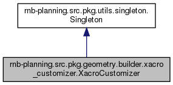

Custom Xacro file generator. More...
Inheritance diagram for rnb-planning.src.pkg.geometry.builder.xacro_customizer.XacroCustomizer:

Collaboration diagram for rnb-planning.src.pkg.geometry.builder.xacro_customizer.XacroCustomizer:

Public Member Functions | |
| def | __init__ (self) |
| def | initialize (self, robots, xacro_path=None) |
| create xacro file with given information More... | |
| def | convert_xacro_to_urdf (self, urdf_path=URDF_PATH_DEFAULT, joint_limit_dict=None, joint_fix_dict=None) |
| convert xacro file to urdf and get urdf content More... | |
| def | start_rviz (self) |
| start rviz with converted urdf file in URDF_PATH_DEFAULT | |
| def | clear (self) |
| shutdown rviz and clear added robots | |
 Public Member Functions inherited from rnb-planning.src.pkg.utils.singleton.Singleton Public Member Functions inherited from rnb-planning.src.pkg.utils.singleton.Singleton | |
| def | instance (cls, args, kargs) |
Public Attributes | |
| xacro_path | |
| subp | |
| urdf_content | |
| urdf_path | |
| joint_names | |
| link_names | |
| rexpression_list | |
| Public Attributes inherited from rnb-planning.src.pkg.utils.singleton.Singleton | |
| instance | |
Detailed Description
Custom Xacro file generator.
- Remarks
- This generates customized xacro file for ROS functions in XACRO_PATH_DEFAULT = 'src/robots/custom_robots.urdf.xacro' and convert it to urdf.
Member Function Documentation
◆ convert_xacro_to_urdf()
| def rnb-planning.src.pkg.geometry.builder.xacro_customizer.XacroCustomizer.convert_xacro_to_urdf | ( | self, | |
urdf_path = URDF_PATH_DEFAULT, |
|||
joint_limit_dict = None, |
|||
joint_fix_dict = None |
|||
| ) |
convert xacro file to urdf and get urdf content
- Remarks
- This generates urdf file for ROS robot modeling in URDF_PATH_DEFAULT = '{}src/robots/custom_robots.urdf'.format(RNB_PLANNING_DIR)
- Parameters
-
urdf_path URDF_PATH_DEFAULT is used by default, specifying your own value is not recommended joint_limit_dict joint limit dictionary, in format of {"joint_name":{"upper": rad, "lower": rad, "velocity": rad/s, "effort": rad/s^2}} we use effort as acceleration limit here. joint_fix_dict joint list of name strings to fix (ex: finger joints). joints with a name that includes one of these strings will be fixed.
◆ initialize()
| def rnb-planning.src.pkg.geometry.builder.xacro_customizer.XacroCustomizer.initialize | ( | self, | |
| robots, | |||
xacro_path = None |
|||
| ) |
create xacro file with given information
- Remarks
- This generates customized xacro file for ROS robot modeling in XACRO_PATH_DEFAULT = 'src/robots/custom_robots.urdf.xacro' and convert it to urdf.
- Parameters
-
robots list of rnb-planning.src.pkg.controller.robot_config.RobotConfig xacro_path by default XACRO_PATH_DEFAULT is used, but you can specify your own path.
The documentation for this class was generated from the following file:
- src/pkg/geometry/builder/xacro_customizer.py